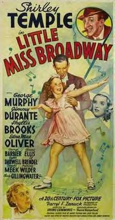

Little Miss Broadway
Starring: Shirley Temple, Edna May Oliver, George Murphy
Director: Irving Cummings
Writer: Harry Tugend
Little Miss Broadway is a 1938 American musical drama film directed by Irving Cummings. The screenplay was written by Harry Tugend and Jack Yellen. The film stars Shirley Temple in a story about a theatrical boarding house and its occupants, and was originally titled Little Lady of Broadway. In 2009, the film was available on DVD and videocassette.
Trivia
- Murphy, who was not satisfied with the dance routine in "We Should Be Together," insisted that movie's closing dance number be reworked.
- Despite Temple's mother's concerns, Temple was on board with it.
- The dance number proved so popular with the cast and crew that Murphy and Temple gave an encore performance after the cameras stopped rolling.
Previous Showings
4 Runs • 1 Festival
Original Billings: 2 runs (August 24, 1938 - November 9, 1947)
Original Run: August 24, 1938 (Wednesday - Saturday)
All runs on record (4):
- August 24, 1938 (Wednesday - Saturday)Shirley Temple, George Murphy
- November 9, 1947 (Sunday - Tuesday)Jean Porter, John Shelton
- March 12 - 13, 1991w/ Little Miss Marker
- February 15 - 16, 2014Frank Capra Festivalw/ Rebecca of Sunnybrook Farm, Curly Top, Poor Little Rich Girl, The Little Colonel, The Bachelor and the Bobby-Soxer